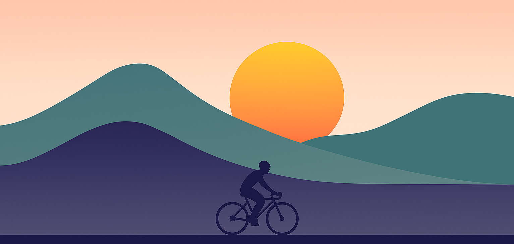

My Simple Cycling Website
Home
Local Routes
Adventures
Photos
Group Rides
Hello and welcome to my website! Here you will find information about my journey and progression into the world of cycling. I hope you enjoy.